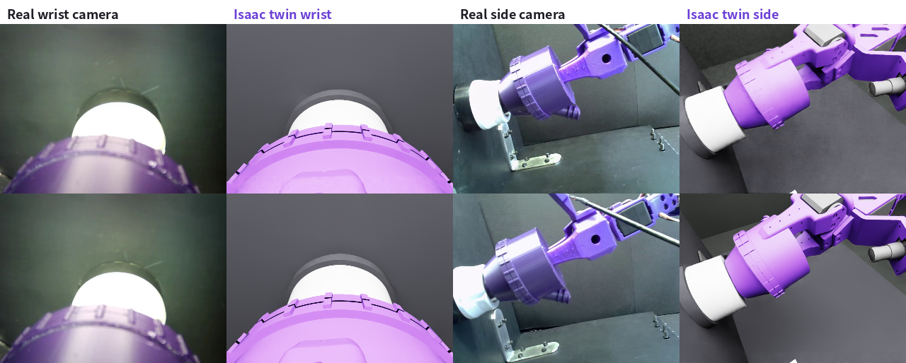

The twin-trained model stopped 5 mm short of the socket
On the real arm, the first Sim-to-Real model jammed the plug in the same place every time: about 5 mm low and to the right of the socket. My first guess was that it had never seen a recovery, so I built a tool that synthesizes miss, hold, retreat and realign motions with IK. But more training kept missing in the same direction. That is a bias, not random error, so I stopped adding data and suspected that the virtual cameras did not match the real ones.
Side by side, real and twin frames of the inserted pose showed both cameras off in position and angle. An automatic search that maximized the overlap (IoU) of the white socket and the purple cover picked nonsense twice: the render updated one frame late, and the metric did not capture the error. So I built a mode (--try_cams) that renders a grid of candidate cameras next to the real frame and chose by eye. After re-rendering with the calibrated cameras and fine-tuning 1k steps, the model inserted 20/20 on the static socket and 19/20 on the moving deck. The recovery demos were not used in the final model.
